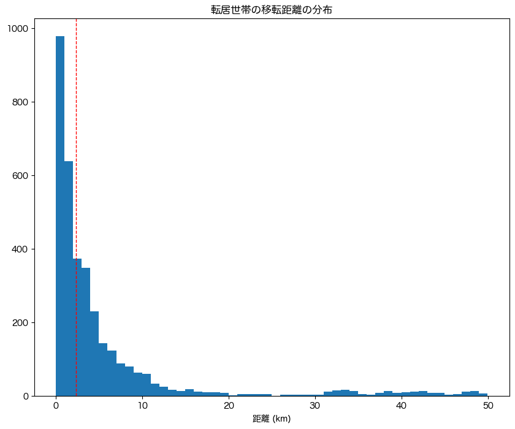
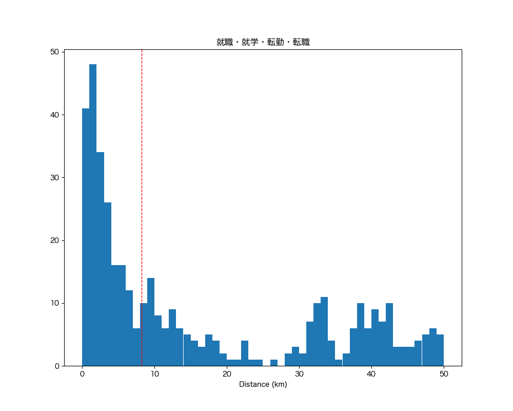
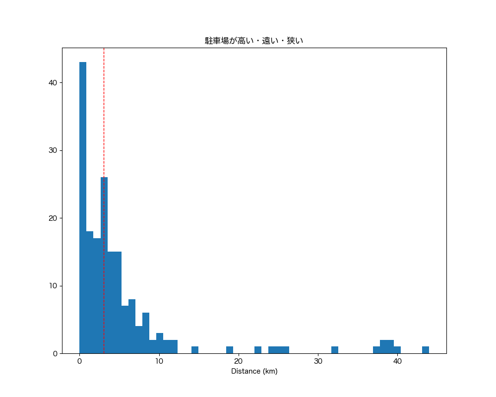
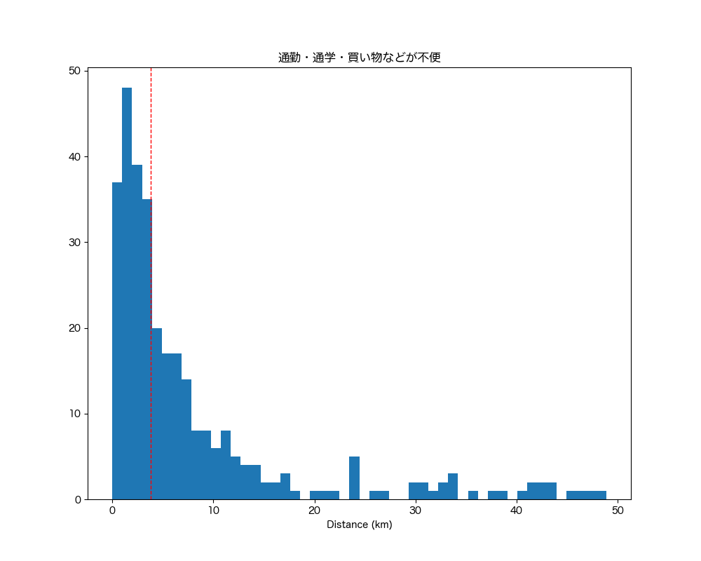

解説 15
転居世帯の移転距離の分布を、図1に示します。 ほとんどの世帯が、元の住宅から5km以内の近場に転居することが分かります。 その理由に、結婚や子供の成長に伴う世帯分離は家族からの支援や環境の変化を避けるため近場へと転居することが考えられます。

図1：転居前後の居住地の距離
一方で、図2〜4に示すように、就職・就学・転勤・転職、駐車場の問題、生活の利便性の問題を理由とする転居は、移転距離が大きい傾向があります。

図2：転居前後の居住地の距離 (就職・就学・転勤・転職)

図3：転居前後の居住地の距離（駐車場が高い・遠い・狭い）

図4：転居前後の居住地の距離（通勤・通学・買い物などが不便）